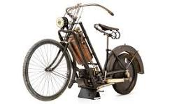
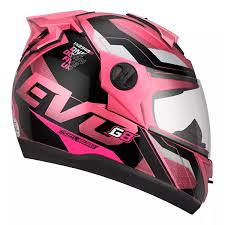
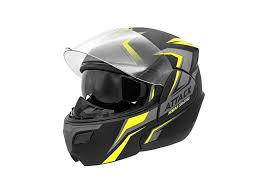
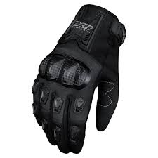
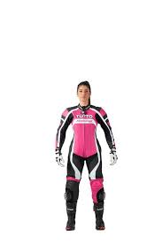

A Invenção da Motocicleta
A origem da motocicleta remonta ao século XIX, quando inventores em todo o mundo começaram a experimentar
a ideia de adicionar um motor a uma bicicleta. A primeira motocicleta verdadeira foi criada por Gottlieb
Daimler e Wilhelm Maybach na Alemanha, em 1885. Esta invenção, chamada de “Reitwagen”, foi a primeira a
usar um motor de combustão interna, uma inovação que se tornou a base para todas as futuras motocicletas.

Apesar de Daimler e Maybach terem sido os primeiros a inventar a motocicleta, foram os inventores e fabricantes
subsequentes que realmente aprimoraram e popularizaram o veículo. Na virada do século XX, empresas como a Indian
Motorcycle Co. nos Estados Unidos e a Triumph Motorcycles no Reino Unido começaram a produzir motocicletas em massa,
tornando-as mais acessíveis para o público em geral.
Durante as duas guerras mundiais, a motocicleta provou ser um recurso valioso para as forças militares, devido à sua
velocidade e capacidade de manobra. Posteriormente, a popularidade da motocicleta como veículo pessoal cresceu,
particulamente nos Estados Unidos, onde surgiu uma cultura de motocicleta distinta, com o crescimento dos
clubes de motociclistas e a popularização do estilo de vida do motociclista.

R$ 300

R$ 350

R$ 150

R$ 300